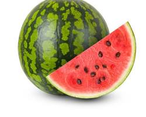

Beneficios de la Sandía

La sandía es una fruta refrescante y nutritiva, conocida por sus numerosos beneficios:
- Rica en agua, lo que ayuda a mantenerte hidratado, especialmente en climas cálidos.
- Fuente de licopeno, un antioxidante que puede reducir el riesgo de enfermedades cardíacas y cáncer.
- Contiene vitaminas A y C, que fortalecen el sistema inmunológico y promueven la salud de la piel.
- Proporciona potasio, que ayuda a regular la presión arterial y la función muscular.
- Contiene citrulina, un aminoácido que puede mejorar el flujo sanguíneo y reducir la fatiga muscular.
¡Disfruta de la sandía como un refrigerio saludable y refrescante!
Volver a la página principal